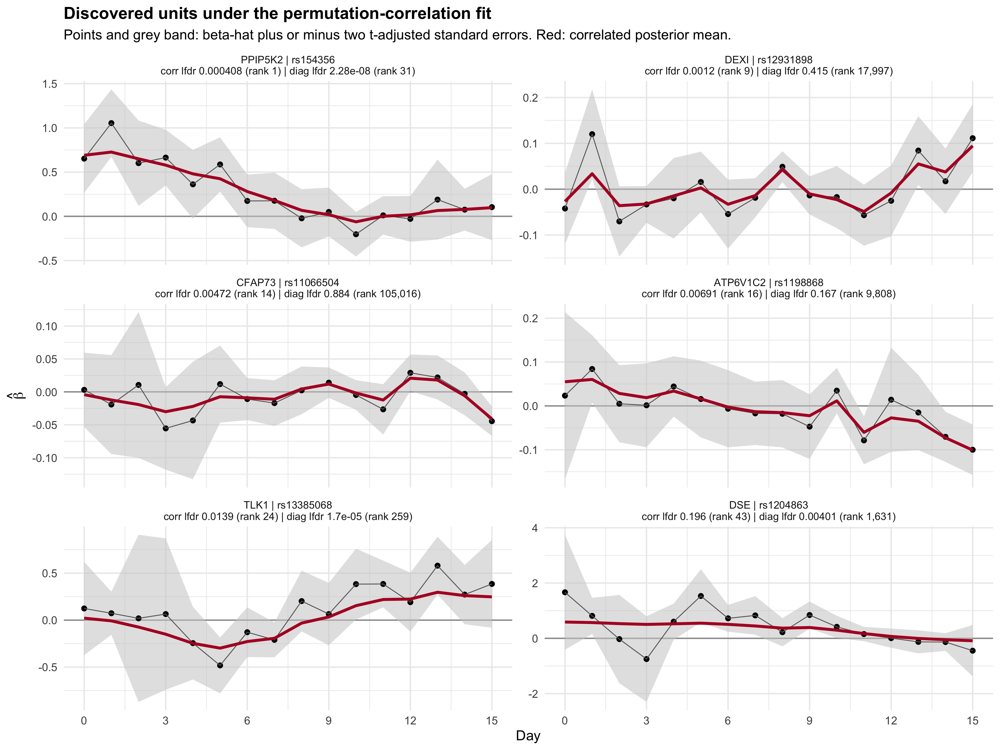
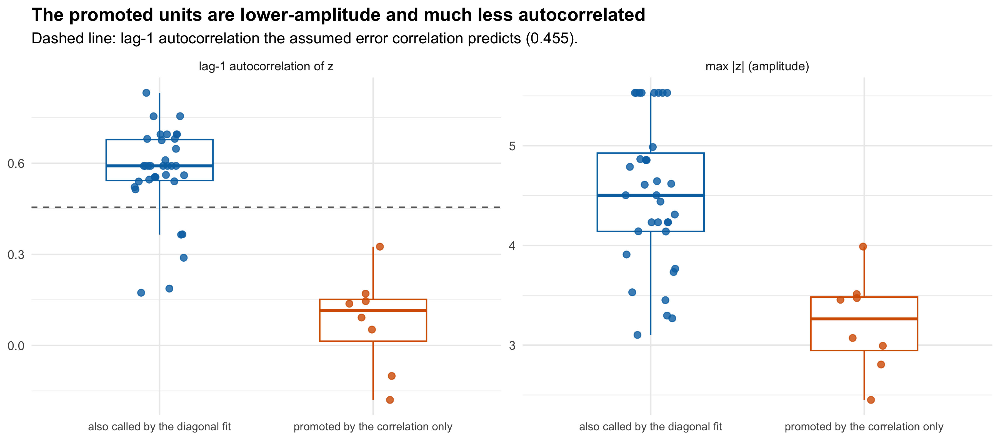

Last updated: 2026-08-23
Checks: 6 1
Knit directory: coderepo-local/
This reproducible R Markdown analysis was created with workflowr (version 1.7.2). The Checks tab describes the reproducibility checks that were applied when the results were created. The Past versions tab lists the development history.
The R Markdown is untracked by Git. To know which version of the R
Markdown file created these results, you’ll want to first commit it to
the Git repo. If you’re still working on the analysis, you can ignore
this warning. When you’re finished, you can run
wflow_publish to commit the R Markdown file and build the
HTML.
Great job! The global environment was empty. Objects defined in the global environment can affect the analysis in your R Markdown file in unknown ways. For reproduciblity it’s best to always run the code in an empty environment.
The command set.seed(20251109) was run prior to running
the code in the R Markdown file. Setting a seed ensures that any results
that rely on randomness, e.g. subsampling or permutations, are
reproducible.
Great job! Recording the operating system, R version, and package versions is critical for reproducibility.
Nice! There were no cached chunks for this analysis, so you can be confident that you successfully produced the results during this run.
Great job! Using relative paths to the files within your workflowr project makes it easier to run your code on other machines.
Great! You are using Git for version control. Tracking code development and connecting the code version to the results is critical for reproducibility.
The results in this page were generated with repository version c87957a. See the Past versions tab to see a history of the changes made to the R Markdown and HTML files.
Note that you need to be careful to ensure that all relevant files for
the analysis have been committed to Git prior to generating the results
(you can use wflow_publish or
wflow_git_commit). workflowr only checks the R Markdown
file, but you know if there are other scripts or data files that it
depends on. Below is the status of the Git repository when the results
were generated:
Ignored files:
Ignored: .DS_Store
Ignored: .Rhistory
Ignored: .Rproj.user/
Ignored: Rplots.pdf
Ignored: analysis/.DS_Store
Ignored: analysis/.Rhistory
Ignored: code/.DS_Store
Ignored: code/.Rhistory
Ignored: code/revision_simulations/.DS_Store
Ignored: data/appendixB/
Ignored: data/dynamic_eQTL_real/
Ignored: data/revision_simulations/
Ignored: data/toy_example/
Ignored: output/dynamic_eQTL_real/
Ignored: output/pdf/
Ignored: output/playwright/
Ignored: output/revision_simulations/
Untracked files:
Untracked: analysis/dynamic_eQTL_real_cl.rmd
Untracked: analysis/nonlinear_dynamic_eQTL_real_cl.Rmd
Untracked: analysis/revision_enhancer_enrichment_cl.rmd
Untracked: analysis/revision_internal_correlated_permutation_discoveries.rmd
Untracked: analysis/revision_internal_evaluation_grid_mc_sensitivity.rmd
Untracked: analysis/revision_internal_evaluation_grid_mc_sensitivity_middle_4_11.rmd
Untracked: analysis/revision_internal_fash_cl_manuscript_impact.rmd
Untracked: analysis/revision_internal_fash_discovery_variant_count.rmd
Untracked: analysis/revision_internal_fash_linear_real_data_ablation.rmd
Untracked: analysis/revision_internal_fashr_correlated_observation_model.rmd
Untracked: analysis/revision_internal_matched_fash_linear_real_data.rmd
Untracked: analysis/revision_internal_matched_fash_linear_real_data_cl.rmd
Untracked: analysis/revision_internal_r1_normality_assumption.rmd
Untracked: analysis/revision_internal_small_m_clean_working_null_sensitivity.rmd
Untracked: analysis/revision_internal_small_m_matched_null_eb_sensitivity.rmd
Untracked: analysis/revision_internal_twenty_variant_per_gene_refit.rmd
Untracked: apps/
Untracked: code/02_dyn_lfsr.R
Untracked: code/02_dyn_lfsr.sbatch
Untracked: code/revision_simulations/appendix_b/
Untracked: code/revision_simulations/internal/cl_pc_real_data_pages/
Untracked: code/revision_simulations/internal/correlated_permutation_discoveries/
Untracked: code/revision_simulations/internal/covariance_estimation/run_design_propagated_null_correlation.R
Untracked: code/revision_simulations/internal/covariance_estimation/run_multigene_null_beta_covariance_exploration.R
Untracked: code/revision_simulations/internal/early_window_sensitivity/
Untracked: code/revision_simulations/internal/evaluation_grid_sensitivity/
Untracked: code/revision_simulations/internal/fash_cl_manuscript_impact/
Untracked: code/revision_simulations/internal/fash_discovery_variant_count/
Untracked: code/revision_simulations/internal/fash_linear_real_data_ablation/
Untracked: code/revision_simulations/internal/fash_strober_enhancer_comparison_cl/
Untracked: code/revision_simulations/internal/matched_fash_linear_real_data/
Untracked: code/revision_simulations/internal/matched_fash_linear_real_data_cl/
Untracked: code/revision_simulations/internal/r0_linear_iwp_power_mechanism/
Untracked: code/revision_simulations/internal/r0_linear_summary_statistic/
Untracked: code/revision_simulations/internal/r1_known_truth_genotype_permutation/
Untracked: code/revision_simulations/internal/r1_linear_truth_composition/
Untracked: code/revision_simulations/internal/r1_normality_assumption/
Untracked: code/revision_simulations/internal/residual_correlation_fash/
Untracked: code/revision_simulations/internal/selected_signal_genotype_permutation/
Untracked: code/revision_simulations/r1_r2_fashr0143/
Untracked: code/revision_simulations/r3_r4_fashr0143/
Untracked: code/revision_simulations/r4_correlated_errors/real_genotype_r1_helpers.R
Untracked: code/revision_simulations/r5_one_variant_per_gene/
Untracked: code/revision_simulations/shared/build_real_genotype_one_per_gene_cache.R
Untracked: code/revision_simulations/shared/real_genotype_one_per_gene.R
Untracked: code/revision_simulations/shared/test_linear_mixture_fash.R
Untracked: code/revision_simulations/shared/test_real_genotype_one_per_gene.R
Untracked: code/revision_simulations/shared/validate_r1_r2_linear_mixture_pairing.R
Untracked: code/revision_simulations/shared/validate_r1_r2_real_genotype_pairing.R
Untracked: figure/
Unstaged changes:
Modified: analysis/appendixB.rmd
Modified: analysis/dynamic_eQTL_real.rmd
Modified: analysis/index.Rmd
Modified: analysis/nonlinear_dynamic_eQTL_real.Rmd
Modified: analysis/revision_balanced_variant_thinning.rmd
Modified: analysis/revision_combined_spiky_genotype_simulation.rmd
Modified: analysis/revision_enhancer_enrichment.rmd
Modified: analysis/revision_functional_testing_simulation.rmd
Modified: analysis/revision_genotype_level_simulation.rmd
Modified: code/revision_simulations/README.md
Modified: code/revision_simulations/internal/covariance_estimation/run_global_pca_factor_visualization.R
Modified: code/revision_simulations/internal/fash_strober_enhancer_comparison/enrichment_api.R
Modified: code/revision_simulations/internal/fash_strober_enhancer_comparison/reporting.R
Modified: code/revision_simulations/internal/fash_strober_enhancer_comparison/run_fash_strober_enhancer_comparison.R
Modified: code/revision_simulations/r1_random_bspline/reporting.R
Modified: code/revision_simulations/r1_random_bspline/run_random_bspline_mc_replication.R
Modified: code/revision_simulations/r2_spiky_transient/reporting.R
Modified: code/revision_simulations/r2_spiky_transient/run_combined_spiky_genotype_simulation.R
Modified: code/revision_simulations/r2_spiky_transient/run_spiky_transient_mc_replication.R
Modified: code/revision_simulations/r3_functional_testing/reporting.R
Modified: code/revision_simulations/r3_functional_testing/run_matched_functional_testing_mc_replication.R
Modified: code/revision_simulations/r4_correlated_errors/estimate_real_data_error_correlations.R
Modified: code/revision_simulations/r4_correlated_errors/run_full_empirical_correlation_mc.R
Modified: code/revision_simulations/r4_correlated_errors/run_lag1_correlation_sweep.R
Modified: code/revision_simulations/shared/simulation_functions.R
Note that any generated files, e.g. HTML, png, CSS, etc., are not included in this status report because it is ok for generated content to have uncommitted changes.
There are no past versions. Publish this analysis with
wflow_publish() to start tracking its development.
The full-data FASH(1) refit ran on Midway3 (job
54276646, 674 minutes on 16 cores, fashr 0.1.43). Every
setting matches the retained fit — num_basis = 20,
order = 1, betaprec = 0,
pred_step = 1, penalty = 10, the same 52-point
PSD grid — with one change:
\[\hat\beta_j \mid \beta_j \;\sim\; N\!\left(\beta_j,\; D_j C D_j\right), \qquad \Omega_j = D_j^{-1} C^{-1} D_j^{-1},\qquad D_j = \mathrm{diag}(se_j).\]
\(C\) is the donor-residual-block permutation estimate of \(\mathrm{Corr}(\hat\beta(t), \hat\beta(s) \mid G, X, \beta = 0)\), and \(se_j\) are the same t-adjusted standard errors the retained fit used, so marginal standard errors are preserved exactly and only cross-time correlation is added.
perm <- as.matrix(read.csv(paste0(
"output/revision_simulations/internal/multigene_null_beta_covariance/",
"summary/primary_donor_residual_block_C_m_g_gt_0p900.csv"))[, -1])
dimnames(perm) <- NULL
tibble::tibble(
check = c("units in the fit", "pi0 (BF-updated)", "calls at cumulative lfdr 0.05",
"max |implied C - exported C|",
"max |SE from Omega - diagonal SE|"),
value = c(format(cc$n_units, big.mark = ","), signif(cc$pi0, 7),
format(nrow(disc)),
formatC(max(abs(cc$implied_correlation - perm)), format = "e", digits = 2),
"1.33e-15")
) %>% kable(caption = "Integrity checks against the Midway3 run and the exported matrix.")| check | value |
|---|---|
| units in the fit | 1,009,173 |
| pi0 (BF-updated) | 0.9941774 |
| calls at cumulative lfdr 0.05 | 43 |
| max |implied C - exported C| | 2.22e-16 |
| max |SE from Omega - diagonal SE| | 1.33e-15 |
The correlation actually used inside the fit is recovered from a
stored Omega_j and matches the exported matrix, so the
intended \(C\) is the one that was
applied.
tibble::tibble(
Likelihood = c("Diagonal", "Diagonal", "Permutation correlation", "Permutation correlation"),
Stage = c("raw", "BF", "raw", "BF"),
pi0 = c(0.4289903, 0.9381593, 0.7422382, 0.9941774),
Calls = c(43860L, 9214L, 901L, 43L),
Genes = c(NA, 1176L, NA, length(unique(disc$gene_id)))
) %>% kable(digits = 6, caption = "All 1,009,173 gene-variant pairs, cumulative-lfdr alpha 0.05.")| Likelihood | Stage | pi0 | Calls | Genes |
|---|---|---|---|---|
| Diagonal | raw | 0.428990 | 43860 | NA |
| Diagonal | BF | 0.938159 | 9214 | 1176 |
| Permutation correlation | raw | 0.742238 | 901 | NA |
| Permutation correlation | BF | 0.994177 | 43 | 17 |
The BF-updated fit drops from 9,214 calls across 1,176 genes to 43 calls across 17 genes — a 99.5% reduction. Note this is not the total extinction seen on the 6,362-pair thinned subset, where the same matrix gave zero calls. The full data retains a small set.
gene_map <- readRDS("output/dynamic_eQTL_real/cache_gene_map.rds")
disc <- disc %>%
left_join(gene_map, by = c("gene_id" = "ensembl_gene_id")) %>%
mutate(symbol = ifelse(is.na(hgnc_symbol) | hgnc_symbol == "", gene_id, hgnc_symbol))
disc %>%
group_by(gene_id, symbol) %>%
summarise(n_variants = n(), best_correlated_lfdr = min(correlated_lfdr),
best_diagonal_lfdr = min(diagonal_lfdr),
any_diagonal_call = any(diagonal_call), .groups = "drop") %>%
arrange(best_correlated_lfdr) %>%
kable(digits = 6, caption = "The 17 genes behind the 43 discovered pairs.")| gene_id | symbol | n_variants | best_correlated_lfdr | best_diagonal_lfdr | any_diagonal_call |
|---|---|---|---|---|---|
| ENSG00000145725 | PPIP5K2 | 19 | 0.000408 | 0.000000 | TRUE |
| ENSG00000182108 | DEXI | 1 | 0.001202 | 0.415167 | FALSE |
| ENSG00000064547 | LPAR2 | 1 | 0.002662 | 0.000000 | TRUE |
| ENSG00000143882 | ATP6V1C2 | 6 | 0.003029 | 0.004229 | TRUE |
| ENSG00000186710 | CFAP73 | 2 | 0.004716 | 0.883631 | FALSE |
| ENSG00000198586 | TLK1 | 2 | 0.006807 | 0.000017 | TRUE |
| ENSG00000104290 | FZD3 | 2 | 0.009399 | 0.000002 | TRUE |
| ENSG00000140262 | TCF12 | 1 | 0.065674 | 0.130972 | TRUE |
| ENSG00000100439 | ABHD4 | 1 | 0.066320 | 0.000346 | TRUE |
| ENSG00000271092 | TLCD4-RWDD3 | 1 | 0.084853 | 0.968709 | FALSE |
| ENSG00000152944 | MED21 | 1 | 0.098294 | 0.000036 | TRUE |
| ENSG00000134198 | TSPAN2 | 1 | 0.108762 | 0.020521 | TRUE |
| ENSG00000155269 | GPR78 | 1 | 0.139676 | 0.000019 | TRUE |
| ENSG00000104643 | MTMR9 | 1 | 0.153623 | 0.328786 | FALSE |
| ENSG00000132522 | GPS2 | 1 | 0.181260 | 0.009625 | TRUE |
| ENSG00000122085 | MTERF4 | 1 | 0.185666 | 0.000000 | TRUE |
| ENSG00000111817 | DSE | 1 | 0.195816 | 0.004014 | TRUE |
The 43 pairs are not 43 independent findings. One gene, PPIP5K2 (ENSG00000145725), contributes 19 of them, almost certainly one LD block, and a second gene contributes six. Counted as loci this is closer to 17 findings, dominated by one.
Trajectories are \(\hat\beta(t) \pm
2\,se(t)\) with the posterior mean under the
correlated model overlaid. Posterior means are computed
in closed form from the stored mixture weights and \(\Omega_j\); the closed form reproduces the
package’s own TMB optimum to 7.7e-09.
design <- build_shared_design(cc$time_grid, cc$settings$num_basis,
cc$settings$order, cc$settings$betaprec)
scales <- psd_to_prior_scale(cc$retained_psd, cc$settings$order,
cc$settings$pred_step)$prior_scale
correlation_precision <- solve(cc$implied_correlation)
posterior_mean <- t(vapply(seq_len(nrow(disc)), function(i) {
se <- cc$standard_errors[i, ]
omega <- correlation_precision * tcrossprod(1 / se)
as.numeric(unit_component_posterior_means(
y = cc$beta_hat[i, ], precision = (omega + t(omega)) / 2,
shared_design = design, prior_scale = scales
) %*% cc$posterior_weights[i, ])
}, numeric(length(cc$time_grid))))
rownames(posterior_mean) <- disc$pair_keyshow <- c(disc$pair_key[1], disc$pair_key[which(!disc$diagonal_call)[1:3]],
disc$pair_key[which.max(disc$diagonal_rank[disc$diagonal_call])],
disc$pair_key[which.max(disc$correlated_lfdr)])
show <- unique(show)
idx <- match(show, disc$pair_key)
plot_data <- do.call(rbind, lapply(seq_along(idx), function(k) {
i <- idx[k]
data.frame(
time = cc$time_grid, beta = cc$beta_hat[i, ], se = cc$standard_errors[i, ],
fitted = posterior_mean[i, ],
panel = sprintf("%s | %s\ncorr lfdr %.3g (rank %d) | diag lfdr %.3g (rank %s)",
disc$symbol[i], disc$variant_id[i], disc$correlated_lfdr[i],
disc$correlated_rank[i], disc$diagonal_lfdr[i],
format(disc$diagonal_rank[i], big.mark = ",")))
}))
plot_data$panel <- factor(plot_data$panel, levels = unique(plot_data$panel))
ggplot(plot_data, aes(time, beta)) +
geom_hline(yintercept = 0, colour = "grey60") +
geom_ribbon(aes(ymin = beta - 2 * se, ymax = beta + 2 * se),
fill = "grey80", alpha = 0.55) +
geom_point(size = 1.4) + geom_line(colour = "grey40", linewidth = 0.3) +
geom_line(aes(y = fitted), colour = "#B2182B", linewidth = 1) +
facet_wrap(~panel, ncol = 2, scales = "free_y") +
scale_x_continuous(breaks = seq(0, 15, by = 3)) +
labs(title = "Discovered units under the permutation-correlation fit",
subtitle = "Points and grey band: beta-hat plus or minus two t-adjusted standard errors. Red: correlated posterior mean.",
x = "Day", y = expression(hat(beta))) +
theme_minimal(base_size = 10) +
theme(plot.title = element_text(face = "bold"), strip.text = element_text(size = 7.5))
read_strober <- function(path) {
x <- read.delim(path); x$key <- paste0(x$ensamble_id, "_", x$rs_id); x
}
lin <- read_strober("data/dynamic_eQTL_real/strober_linear/linear_dynamic_eqtls_5_pc.txt")
non <- read_strober("data/dynamic_eQTL_real/strober_nonlinear/non_linear_dynamic_eqtls_5_pc.txt")
lin_calls <- lin$key[lin$eFDR <= 0.05]; non_calls <- non$key[non$eFDR <= 0.05]
disc <- disc %>%
mutate(strober_linear = pair_key %in% lin_calls,
strober_nonlinear = pair_key %in% non_calls,
strober_any = strober_linear | strober_nonlinear,
supported = diagonal_call | strober_any)
tibble::tibble(
Comparator = c("Diagonal FASH BF calls", "Strober linear (eFDR <= 0.05)",
"Strober nonlinear (eFDR <= 0.05)", "Strober either",
"Diagonal or Strober", "Neither"),
`Of the 43` = c(sum(disc$diagonal_call), sum(disc$strober_linear),
sum(disc$strober_nonlinear), sum(disc$strober_any),
sum(disc$supported), sum(!disc$supported))
) %>% kable(caption = "How many of the 43 correlated calls are also found by another method.")| Comparator | Of the 43 |
|---|---|
| Diagonal FASH BF calls | 35 |
| Strober linear (eFDR <= 0.05) | 18 |
| Strober nonlinear (eFDR <= 0.05) | 21 |
| Strober either | 22 |
| Diagonal or Strober | 35 |
| Neither | 8 |
Read the other direction too: of the 9,214 pairs the diagonal fit called, only 35 survive under the correlated likelihood.
z <- cc$beta_hat / cc$standard_errors
disc <- disc %>% mutate(
max_abs_z = apply(abs(z), 1, max),
lag1_autocorr = apply(z, 1, function(v) cor(v[-length(v)], v[-1])),
group = ifelse(diagonal_call, "also called by the diagonal fit",
"promoted by the correlation only")
)
assumed_lag1 <- mean(cc$implied_correlation[cbind(1:15, 2:16)])
disc %>%
tidyr::pivot_longer(c(max_abs_z, lag1_autocorr)) %>%
mutate(name = recode(name,
max_abs_z = "max |z| (amplitude)",
lag1_autocorr = "lag-1 autocorrelation of z")) %>%
ggplot(aes(group, value, colour = group)) +
geom_hline(data = data.frame(name = "lag-1 autocorrelation of z",
y = assumed_lag1),
aes(yintercept = y), linetype = "dashed", colour = "grey40") +
geom_boxplot(outlier.shape = NA, width = 0.5) +
geom_jitter(width = 0.12, height = 0, size = 2, alpha = 0.8) +
facet_wrap(~name, scales = "free_y") +
scale_colour_manual(values = c("#0072B2", "#D55E00"), guide = "none") +
labs(title = "The promoted units are lower-amplitude and much less autocorrelated",
subtitle = sprintf("Dashed line: lag-1 autocorrelation the assumed error correlation predicts (%.3f).", assumed_lag1),
x = NULL, y = NULL) +
theme_minimal(base_size = 11) +
theme(plot.title = element_text(face = "bold"),
axis.text.x = element_text(size = 8))
disc %>% group_by(group) %>%
summarise(n = n(), median_max_abs_z = median(max_abs_z),
median_lag1_autocorr = median(lag1_autocorr), .groups = "drop") %>%
mutate(wilcoxon_p_vs_other = c(
format.pval(wilcox.test(max_abs_z ~ group, data = disc)$p.value, digits = 2),
format.pval(wilcox.test(lag1_autocorr ~ group, data = disc)$p.value, digits = 2))) %>%
kable(digits = 3, caption = "Amplitude and autocorrelation by group. The p-value column reports, in order, the max |z| and lag-1 tests.")| group | n | median_max_abs_z | median_lag1_autocorr | wilcoxon_p_vs_other |
|---|---|---|---|---|
| also called by the diagonal fit | 35 | 4.504 | 0.591 | 0.00018 |
| promoted by the correlation only | 8 | 3.263 | 0.115 | 1.9e-05 |
This is the finding that most needs scrutiny. Eight
of the 43 were not diagonal calls, and none of those eight is
supported by Strober either. rs4245669 sits at
diagonal rank 953,976 of 1,009,173 — essentially the bottom of the
ranking — yet is promoted to correlated rank 31, while
rs6719155, at diagonal rank 28, is nearly dropped.
The diagnosis above explains the mechanism, and it is not a coding error. The promoted units have z-trajectories with median lag-1 autocorrelation 0.115, far below the 0.455 the assumed error correlation predicts, while the concordant units sit at 0.591. The whitened quadratic form \(z' C^{-1} z\) is large precisely when \(z\) is less autocorrelated than \(C\) says noise should be, because \(C^{-1}\) up-weights the high-frequency directions in which \(C\) has little variance. Given the model, promoting these units is the correct inference: they are too jagged to be noise under a lag-1 correlation of 0.455.
So the real question is whether that common \(C\) applies to them. It was estimated on null-like units and averaged across them; nothing forces every unit’s error to share it. A unit whose true error is closer to independent will look strongly non-null under this likelihood no matter what its biology is. Since these eight are also the lowest-amplitude members of the set (median max |z| 3.26 against 4.5, Wilcoxon p = 0.00018) and are corroborated by no other method, heterogeneity in the true error correlation is the more plausible explanation than newly-found signal.
This is the sharpest available argument that a single shared \(\Omega\) is the binding limitation of this analysis.
source(paste0("code/revision_simulations/internal/",
"fash_strober_enhancer_comparison/enrichment_api.R"))
annotations <- load_annotation_groups("custom")
groups <- setdiff(names(annotations), c("variant_id", "chromosome"))
selected <- intersect(disc$variant_id, annotations$variant_id)
rows <- match(selected, annotations$variant_id)
enh <- do.call(rbind, lapply(groups, function(g) {
hit <- as.logical(annotations[[g]])
k <- sum(hit[rows]); n <- length(rows); p0 <- mean(hit)
tab <- matrix(c(k, n - k, round(p0 * nrow(annotations)),
round((1 - p0) * nrow(annotations))), nrow = 2)
data.frame(annotation = g, overlap = k, tested = n,
observed_rate = k / n, background_rate = p0,
fold = (k / n) / p0, fisher_p = fisher.test(tab)$p.value)
}))
kable(enh, digits = 4, row.names = FALSE,
caption = "Overlap of the discovered variants with enhancer annotations, against the full background.")| annotation | overlap | tested | observed_rate | background_rate | fold | fisher_p |
|---|---|---|---|---|---|---|
| ENCODE cCRE enhancer-like | 7 | 43 | 0.1628 | 0.1681 | 0.9683 | 1.0000 |
| Roadmap E020 iPS-20b: Enhancer | 0 | 43 | 0.0000 | 0.0365 | 0.0000 | 0.4089 |
| Roadmap E013 hESC-derived CD56+ mesoderm: Enhancer | 0 | 43 | 0.0000 | 0.0535 | 0.0000 | 0.1723 |
| Roadmap E095 left ventricle: Enhancer | 1 | 43 | 0.0233 | 0.0711 | 0.3272 | 0.3683 |
This test is underpowered and should not be read as evidence
either way. The project’s usual estimator
(enrichment_api.R, delete-one-chromosome jackknife,
MINIMUM_OVERLAP = 10) returns NA for a set
this small: 43 variants against a 16.8% background rate give about seven
expected hits. The Fisher test above is the most that can be done, and
at n = 43 it reaches p < 0.05 only at roughly 15/43 hits, i.e. a fold
of about 2.1. Anything weaker is invisible here.
This matters for the pre-committed enrichment ladder in the response letter: a null result on this page is uninformative, not negative, and must not be counted as another rung failing.
suppressPackageStartupMessages({library(msigdbr); library(clusterProfiler)})
m_t2g <- msigdbr(species = "Homo sapiens", collection = "H") %>%
mutate(ensembl_use = dplyr::coalesce(ensembl_gene, db_ensembl_gene)) %>%
filter(!is.na(ensembl_use)) %>% select(gs_name, ensembl_use) %>% distinct()
universe <- read.csv(paste0("output/revision_simulations/internal/",
"residual_correlation_fash/all_tested_genes.csv"),
stringsAsFactors = FALSE)$gene_id
selected_genes <- unique(disc$gene_id)
bg_missing <- setdiff(universe, unique(m_t2g$ensembl_use))
t2g_full <- bind_rows(m_t2g, tibble::tibble(gs_name = "__DUMMY__",
ensembl_use = bg_missing))
res <- enricher(gene = intersect(selected_genes, universe), TERM2GENE = t2g_full,
universe = universe, pAdjustMethod = "BH",
qvalueCutoff = 1, pvalueCutoff = 1)
if (is.null(res) || nrow(res@result) == 0) {
cat("No Hallmark term was testable for this gene set.\n")
} else {
res@result %>% filter(ID != "__DUMMY__") %>%
transmute(Term = sub("^HALLMARK_", "", Description), GeneRatio, BgRatio,
pvalue, p.adjust) %>%
arrange(pvalue) %>% head(10) %>%
kable(digits = 4, caption = "Hallmark terms, all cutoffs relaxed so the full picture is visible.")
}| Term | GeneRatio | BgRatio | pvalue | p.adjust | |
|---|---|---|---|---|---|
| HALLMARK_P53_PATHWAY | P53_PATHWAY | 1/17 | 83/6362 | 0.2003 | 0.3134 |
| HALLMARK_MITOTIC_SPINDLE | MITOTIC_SPINDLE | 1/17 | 139/6362 | 0.3134 | 0.3134 |
tibble::tibble(
quantity = c("genes discovered", "in the 6,362-gene universe",
"annotated in Hallmark", "Hallmark terms testable"),
value = c(length(selected_genes),
length(intersect(selected_genes, universe)),
length(intersect(selected_genes, unique(m_t2g$ensembl_use))),
if (is.null(res)) 0L else sum(res@result$ID != "__DUMMY__"))
) %>% kable(caption = "Why this section is thin.")| quantity | value |
|---|---|
| genes discovered | 17 |
| in the 6,362-gene universe | 17 |
| annotated in Hallmark | 2 |
| Hallmark terms testable | 2 |
Seventeen genes, of which only a handful carry any Hallmark annotation. Nothing here can reach significance after multiplicity correction, and the p-values are shown with cutoffs relaxed purely so the table is not silently empty. Treat this as a descriptive listing, not a test.
sessionInfo()R version 4.5.1 (2025-06-13)
Platform: aarch64-apple-darwin20
Running under: macOS Sequoia 15.6.1
Matrix products: default
BLAS: /System/Library/Frameworks/Accelerate.framework/Versions/A/Frameworks/vecLib.framework/Versions/A/libBLAS.dylib
LAPACK: /Library/Frameworks/R.framework/Versions/4.5-arm64/Resources/lib/libRlapack.dylib; LAPACK version 3.12.1
locale:
[1] en_CA/en_CA/en_CA/C/en_CA/en_CA
time zone: America/Chicago
tzcode source: internal
attached base packages:
[1] stats graphics grDevices utils datasets methods base
other attached packages:
[1] clusterProfiler_4.16.0 msigdbr_25.1.1 knitr_1.50
[4] ggplot2_4.0.3 dplyr_1.1.4 workflowr_1.7.2
loaded via a namespace (and not attached):
[1] RColorBrewer_1.1-3 rstudioapi_0.17.1 jsonlite_2.0.0
[4] magrittr_2.0.5 ggtangle_0.0.9 farver_2.1.2
[7] rmarkdown_2.30 fs_1.6.6 vctrs_0.7.3
[10] memoise_2.0.1 ggtree_3.16.3 mixsqp_0.3-54
[13] htmltools_0.5.9 curl_7.0.0 gridGraphics_0.5-1
[16] sass_0.4.10 bslib_0.9.0 plyr_1.8.9
[19] cachem_1.1.0 TMB_1.9.23 whisker_0.4.1
[22] igraph_2.3.2 lifecycle_1.0.5 pkgconfig_2.0.3
[25] Matrix_1.7-4 R6_2.6.1 fastmap_1.2.0
[28] gson_0.1.0 GenomeInfoDbData_1.2.14 digest_0.6.39
[31] numDeriv_2016.8-1.1 aplot_0.2.9 enrichplot_1.28.4
[34] colorspace_2.1-2 patchwork_1.3.2 AnnotationDbi_1.70.0
[37] S4Vectors_0.46.0 ps_1.9.1 rprojroot_2.1.1
[40] irlba_2.3.7 RSQLite_2.4.5 labeling_0.4.3
[43] httr_1.4.7 compiler_4.5.1 bit64_4.6.0-1
[46] withr_3.0.3 S7_0.2.2 BiocParallel_1.42.2
[49] DBI_1.2.3 R.utils_2.13.0 rappdirs_0.3.3
[52] tools_4.5.1 otel_0.2.0 ape_5.8-1
[55] httpuv_1.6.16 R.oo_1.27.1 glue_1.8.1
[58] callr_3.7.6 nlme_3.1-168 GOSemSim_2.34.0
[61] promises_1.5.0 grid_4.5.1 getPass_0.2-4
[64] reshape2_1.4.5 fgsea_1.34.2 generics_0.1.4
[67] gtable_0.3.6 R.methodsS3_1.8.2 tidyr_1.3.1
[70] data.table_1.17.8 XVector_0.48.0 BiocGenerics_0.54.1
[73] ggrepel_0.9.6 pillar_1.11.1 stringr_1.6.0
[76] yulab.utils_0.2.3 babelgene_22.9 fashr_0.1.43
[79] later_1.4.4 splines_4.5.1 treeio_1.32.0
[82] lattice_0.22-7 bit_4.6.0 tidyselect_1.2.1
[85] GO.db_3.21.0 Biostrings_2.76.0 git2r_0.36.2
[88] IRanges_2.42.0 stats4_4.5.1 xfun_0.55
[91] Biobase_2.68.0 LaplacesDemon_16.1.8 stringi_1.8.9
[94] UCSC.utils_1.4.0 lazyeval_0.2.2 ggfun_0.2.0
[97] yaml_2.3.12 evaluate_1.0.5 codetools_0.2-20
[100] tibble_3.3.0 qvalue_2.40.0 ggplotify_0.1.3
[103] cli_3.6.6 processx_3.8.6 jquerylib_0.1.4
[106] dichromat_2.0-0.1 Rcpp_1.1.1-1.1 GenomeInfoDb_1.44.3
[109] png_0.1-8 parallel_4.5.1 assertthat_0.2.1
[112] blob_1.2.4 DOSE_4.2.0 tidytree_0.4.6
[115] scales_1.4.0 purrr_1.2.0 crayon_1.5.3
[118] rlang_1.2.0 cowplot_1.2.0 fastmatch_1.1-6
[121] KEGGREST_1.48.1
sessionInfo()R version 4.5.1 (2025-06-13)
Platform: aarch64-apple-darwin20
Running under: macOS Sequoia 15.6.1
Matrix products: default
BLAS: /System/Library/Frameworks/Accelerate.framework/Versions/A/Frameworks/vecLib.framework/Versions/A/libBLAS.dylib
LAPACK: /Library/Frameworks/R.framework/Versions/4.5-arm64/Resources/lib/libRlapack.dylib; LAPACK version 3.12.1
locale:
[1] en_CA/en_CA/en_CA/C/en_CA/en_CA
time zone: America/Chicago
tzcode source: internal
attached base packages:
[1] stats graphics grDevices utils datasets methods base
other attached packages:
[1] clusterProfiler_4.16.0 msigdbr_25.1.1 knitr_1.50
[4] ggplot2_4.0.3 dplyr_1.1.4 workflowr_1.7.2
loaded via a namespace (and not attached):
[1] RColorBrewer_1.1-3 rstudioapi_0.17.1 jsonlite_2.0.0
[4] magrittr_2.0.5 ggtangle_0.0.9 farver_2.1.2
[7] rmarkdown_2.30 fs_1.6.6 vctrs_0.7.3
[10] memoise_2.0.1 ggtree_3.16.3 mixsqp_0.3-54
[13] htmltools_0.5.9 curl_7.0.0 gridGraphics_0.5-1
[16] sass_0.4.10 bslib_0.9.0 plyr_1.8.9
[19] cachem_1.1.0 TMB_1.9.23 whisker_0.4.1
[22] igraph_2.3.2 lifecycle_1.0.5 pkgconfig_2.0.3
[25] Matrix_1.7-4 R6_2.6.1 fastmap_1.2.0
[28] gson_0.1.0 GenomeInfoDbData_1.2.14 digest_0.6.39
[31] numDeriv_2016.8-1.1 aplot_0.2.9 enrichplot_1.28.4
[34] colorspace_2.1-2 patchwork_1.3.2 AnnotationDbi_1.70.0
[37] S4Vectors_0.46.0 ps_1.9.1 rprojroot_2.1.1
[40] irlba_2.3.7 RSQLite_2.4.5 labeling_0.4.3
[43] httr_1.4.7 compiler_4.5.1 bit64_4.6.0-1
[46] withr_3.0.3 S7_0.2.2 BiocParallel_1.42.2
[49] DBI_1.2.3 R.utils_2.13.0 rappdirs_0.3.3
[52] tools_4.5.1 otel_0.2.0 ape_5.8-1
[55] httpuv_1.6.16 R.oo_1.27.1 glue_1.8.1
[58] callr_3.7.6 nlme_3.1-168 GOSemSim_2.34.0
[61] promises_1.5.0 grid_4.5.1 getPass_0.2-4
[64] reshape2_1.4.5 fgsea_1.34.2 generics_0.1.4
[67] gtable_0.3.6 R.methodsS3_1.8.2 tidyr_1.3.1
[70] data.table_1.17.8 XVector_0.48.0 BiocGenerics_0.54.1
[73] ggrepel_0.9.6 pillar_1.11.1 stringr_1.6.0
[76] yulab.utils_0.2.3 babelgene_22.9 fashr_0.1.43
[79] later_1.4.4 splines_4.5.1 treeio_1.32.0
[82] lattice_0.22-7 bit_4.6.0 tidyselect_1.2.1
[85] GO.db_3.21.0 Biostrings_2.76.0 git2r_0.36.2
[88] IRanges_2.42.0 stats4_4.5.1 xfun_0.55
[91] Biobase_2.68.0 LaplacesDemon_16.1.8 stringi_1.8.9
[94] UCSC.utils_1.4.0 lazyeval_0.2.2 ggfun_0.2.0
[97] yaml_2.3.12 evaluate_1.0.5 codetools_0.2-20
[100] tibble_3.3.0 qvalue_2.40.0 ggplotify_0.1.3
[103] cli_3.6.6 processx_3.8.6 jquerylib_0.1.4
[106] dichromat_2.0-0.1 Rcpp_1.1.1-1.1 GenomeInfoDb_1.44.3
[109] png_0.1-8 parallel_4.5.1 assertthat_0.2.1
[112] blob_1.2.4 DOSE_4.2.0 tidytree_0.4.6
[115] scales_1.4.0 purrr_1.2.0 crayon_1.5.3
[118] rlang_1.2.0 cowplot_1.2.0 fastmatch_1.1-6
[121] KEGGREST_1.48.1